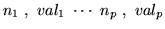
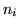
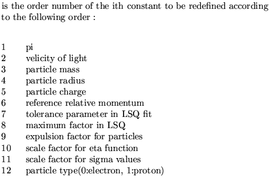

Next: COSY translation
Up: Use and description of
Previous: Beam matrix tracing
This operationallows the user to redefine basic constants. The
purpose of this operation is to enable comparison of the computation
results with other programs or to update the values as their
accuracies increase.The constants accessible to the user are : Pi, the
velocity of light (in m/sec), the electron mass (or particle mass) (in
GeV), the electron (or particle) radius, the electron (or particle)
charge. The reference relative momentum (dp/p) that is used in some
Taylor expansion with delta as independent variable.Two parameters
used in the least square minimizer routine are also accessible to the
user as well as the expulsion factor. The scale factors ETAFAC and
SIGFAC are also accessible via this operation. The particle type :
0 for electrons 1 for protons .
Use the operation SHO Constant to examine the constants.
Input format:
CONStant definition .....(up to 80 Characters)
followed by :

Parameter definitions
 
 new value of the constant .
new value of the constant .
Examples
The example given is extracted from demo9 and shows the change of the
current particle type to a proton and sets the rest mass to the value
of the rest mass of a proton.
CONSTANT DEF
12 1 3 0.938259,
Next: COSY translation
Up: Use and description of
Previous: Beam matrix tracing
Dobrin Kaltchev
2004-10-20